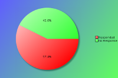
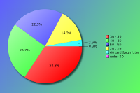
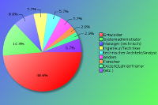
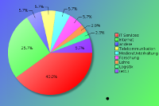
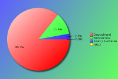

Deutscher Perl-Workshop 2011 - Survey Results
The following survey results are a simple presentation of the raw data.
No attempt has been made to analyse the data and compare with previous
years. See forthcoming PDFs for more in depth analysis.
Click on pie charts to view larger image version.
Demographie (erforderlich)
Diese Fragen sollten uns helfen zu verstehen, wer unsere Teilnehmer sind.
Teilnehmer:

| Count | Description |
|---|
| 35 | Geantwortet |
| 26 | Keine Antwort |
| 61 | Insgesamt |
| 57 | Geantwortet in Prozent |
Alter:

| Count | Description |
|---|
| 0 | unter 20 |
| 5 | 20 - 29 |
| 12 | 30 - 39 |
| 9 | 40 - 49 |
| 8 | 50 - 59 |
| 1 | 60 und älter |
Beruf:

| Count | Description |
|---|
| 1 | CEO/Geschäftsführer/Senior Manager |
| 0 | Manager (nicht-technisch) |
| 3 | Manager (technisch) |
| 2 | technischer Architekt/Analyst |
| 17 | Entwickler |
| 2 | Ingenieur/Techniker |
| 5 | Systemadministrator |
| 1 | Student |
| 1 | Dozent/Lehrer/Trainer |
| 0 | Personalwesen |
| 1 | Forscher |
| 0 | arbeitssuchend |
| 2 | andere |
Wenn Sie mehrere Positionen bekleiden, wählen Sie bitte die aus, bei der Sie die meiste Verantwortung tragen. Wählen Sie bitte auch nach Ihrem Tätigkeitsfeld und nicht nach Ihrem 'Türschild'.
Bei 'andere' geben Sie bitte Ihre Berufsbezeichnung an:
Branche:

| Count | Description |
|---|
| 0 | Automobilindustrie |
| 1 | Lehre |
| 0 | Maschinenbau |
| 1 | Finanzwesen |
| 1 | Regierung |
| 14 | IT Services |
| 9 | Internet/Web |
| 0 | Jurist |
| 1 | Logistik |
| 2 | Medien/Unterhaltung |
| 0 | Medizin/Gesundheitswesen |
| 0 | Immobilien |
| 2 | Forschung |
| 0 | Einzelhandel |
| 2 | Telekommunikation |
| 0 | Reiseindustrie |
| 0 | arbeitssuchend |
| 2 | andere |
Wenn Ihre Firma/Ihr Arbeitgeber in mehreren Branchen tätig ist, wählen Sie bitte die Branche an, für die Sie primär tätig sind.
Bei 'andere' geben Sie bitte hier die Branchenbezeichnung an:
- Bildungswesen
- Forschung und Lehre, Uni
- Linguistik
Herkunft:

| Count | Description |
|---|
| 30 | Deutschland |
| 4 | Westeuropa |
| 0 | Osteuropa |
| 0 | Südeuropa |
| 0 | USA / Kanada |
| 1 | Asien / Australien |
| 0 | Südamerika |
| 0 | Afrika |
Wählen Sie bitte das Land/den Bereich aus in dem Sie wohnten, bevor Sie zum Workshop kamen.
Die Perl Community, YAPCs & Workshops
Diese Fragen sollen uns helfen, den Grad des Mitwirkens unserer Teilnehmer in der Perl Community zu verstehen.
Wie schätzen Sie Ihre Perl Kenntnisse ein?
| Count | Description |
|---|
| 0 | Anfänger |
| 6 | fortgeschrittener Anfänger |
| 28 | Fortgeschritten |
An wie vielen Perl Workshops haben Sie teilgenommen?
| Count | Description |
|---|
| 8 | Dies war mein erster Workshop |
| Attended Workshops | 1 | 2 | 3 | 4 | 5 | 6 | 7 | 8 | 9 | 10 | 11 | total |
|---|
| Deutscher Perl Workshop | 3 | 2 | 3 | 3 | 6 | 2 | 3 | 2 | - | 2 | 1 | 138 |
| Österreichischer Perl Workshop | 2 | 1 | 1 | - | - | - | - | - | - | - | - | 7 |
| Italienischer Perl Workshop | 2 | - | - | - | - | - | - | - | - | - | - | 2 |
| London Perl Workshop | 1 | - | - | - | - | - | - | - | - | - | - | 1 |
| Nordic Perl Workshop | 3 | - | - | - | - | - | - | - | - | - | - | 3 |
| amerikanische Perl Workshops | - | - | 1 | - | - | - | - | - | - | - | - | 3 |
| Andere Perl Workshops | 1 | - | 1 | - | - | - | 1 | - | - | - | - | 11 |
An wievielen YAPCs haben Sie teilgenommen?
| Attended YAPCs | 1 | 2 | 3 | 4 | 5 | 6 | 7 | 8 | 9 | 10 | 11 | total |
|---|
| YAPC::Europe | 6 | 3 | 3 | 2 | 2 | - | - | - | - | - | 1 | 50 |
| YAPC::NA | 1 | - | - | - | - | - | - | - | - | - | - | 1 |
| YAPC::Australia / OSDC::Australia | 1 | - | - | - | - | - | - | - | - | - | - | 1 |
Planen Sie, an einer zukünftigen YAPC/an einem zukünftigen Workhop teilzunehmen?
| Count | Description |
|---|
| 34 | Ja |
| 1 | Vielleicht |
| 0 | Weiss noch nicht |
| 0 | Nein |
Sind Sie Mitglied einer lokalen Perl Monger Gruppe?
| Count | Description |
|---|
| 21 | Ja |
| 14 | Nein |
Wenn nicht, planen Sie, eine zu finden oder zu gründen?
| Count | Description |
|---|
| 0 | Ja |
| 4 | Vielleicht |
| 4 | Weiss nicht |
| 7 | Nein |
Zu welchen anderen Bereichen der Perl Community steuern Sie etwas bei?
| Count | Description |
|---|
| 15 | Ich bin CPAN Author |
| 5 | Ich bin CPAN Tester |
| 2 | Ich bin Entwickler eines Perl Projekts (z.B. Rakudo, Catalyst, TAP, Padre, etc) |
| 8 | Ich betreibe einen technischen Blog (z.B. auf blogs.perl, use.perl oder ein persönliches Blog) |
| 14 | Ich nutze PerlMonks oder ein anderes Perl Forum |
| 7 | Ich nutze IRC (z.B. #perl, #yapc, oder #london.pm) |
| 11 | Ich bin auf einer Perl Mailingliste aktiv (z.B. P5P, Perl QA, etc) |
| 19 | Ich bin Mitglied einer Perl Mongers Gruppe |
| 3 | anders ... |
Wenn 'Andere', nennen Sie bitte Ihr Gebiet des Beitrags
- Betreibe Perl-Stände auf Konferenzen
- Ich gestalte Perl-Workshops und vernetze Perl-Monger Groups.
13. deutscher Perl Workshop 2011
Bitte beantworten Sie die folgenden Fragen zum Deutschen Perl Workshop 2011 in Frankfurt am Main.
Wann haben Sie entschieden an diesem Workshop teilzunehmen?
| Count | Description |
|---|
| 18 | Ich komme jetzt regelmäßig zu Perl Workshops |
| 3 | Nach einem anderen Perl Workshop |
| 3 | Nach einer YAPC Perl Konferenz |
| 0 | Meine Vorgesezten/meine Kollegen haben meine Teilname bestimmt |
| 3 | Ein Freund/Kollege hat den Workshop empfolen |
| 2 | Nach dem Lesen einer Anzeigen (Zeitung/Magazin) |
| 2 | Nachdem ich einen Link/eine Anzeige auf einer Webseite, die sich mit Perl beschäftigt gesehen habe |
| 0 | Nachdem ich einen Link/eine Anzeige auf einer Webseite, die sich nicht mit Perl beschäftigt gesehen habe |
| 5 | Nachdem ich eine Mail gelesen hatte, die auf einer Mailingliste gepostet wurde |
| 0 | Nachdem ich andere Werbung für den Workshop gesehen hatte (Online/Presse) |
| 1 | andere ... |
Wenn 'Andere', was half Ihnen bei der Entscheidung?
- gezielt nach Perl Konferenzen gesucht
Waren Sie Vortragender?
| Count | Description |
|---|
| 23 | Nein |
| 2 | Nein, aber ich habe schon auf ähnlichen Konferenzen vorgetragen |
| 8 | Ja, und ich habe auch schon auf ählichen Konferenzen vergetragen |
| 2 | Ja, und das war mein erster Vortrag auf solchen Konferenzen |
Mit "ähnlicher Konferenz" sind sowohl Workshops und/oder YAPCs gemeint, als auch Linux, Open Source oder andere technisch orientierte Veranstaltungen gemeinet.
Wenn Sie vortragender waren: Hätten Sie auch teilgenommen, wenn Sie nicht vorgetragen hätten?
| Count | Description |
|---|
| 8 | Ja |
| 2 | Nein |
Wenn Sie kein Vortragender waren: Würden Sie auf zuküftigen Workshop vortragen?
| Count | Description |
|---|
| 10 | Ja |
| 2 | Nein |
| 12 | Villeicht später |
Was hat Sie dazu bewogen an dieser Konferenz teilzunehmen?
| Count | Description |
|---|
| 3 | Die Liste der Vortragenden |
| 12 | Die Auswahl der Vorträge |
| 9 | Selbst vorzutragen |
| 25 | Die Möglichkeit Perl bzw. Perl-Projekt Mitwirkende zu treffen |
| 27 | Die Möglichkeit mich mit anderen Perl Geeks auszutauschen |
| 5 | Frankfurt am Mein und/oder andere Teile Deutschlands zu besuchen |
| 3 | was anderes ... |
Wenn 'Andere', was hat Sie motiviert, teilzunehmen?
- bin Orga ;-)
- Der Wunsch, Unbekanntes erlernen zu können
- Die moeglichkeit mehr ueber Perl zu lernen und mein Deutsch zu verbessern
Welcher Teil des Workshops "war das Geld wert"?
| Count | Description |
|---|
| 31 | die Vorträge / die Vortragenden |
| 2 | das Begleitmaterial |
| | das T-Shirt |
| 6 | der Veranstaltungsort |
| 3 | die Stadt Frankfurt am Main |
| 19 | das, was zwischen den Vorträgen/drumherum stattfindet |
| 23 | die Teilnehmer |
| 1 | was anderes ... |
Wenn 'Andere', was denken Sie war "das Geld Wert"?
- Welches T-Shirt? Habe ich etwas verpasst? :-)
Haben Sie Urlaub vor oder nach dem Worshop geplant?
| Count | Description |
|---|
| 28 | Ich war nur für den Workshop hier |
| 2 | einige Tage vorher |
| 1 | ein Tag vorher |
| 0 | einige Tage vor- und nachher |
| 1 | ein Tag danach |
| 2 | einige Tage danach |
Welche Art von Vorträgen würden Sie sich für die Zukunft wünschen?
| Count | Description |
|---|
| 2 | Mehr Vorträge für Anfänger |
| 8 | Mehr Vorträge für Fortgeschrittene |
| 7 | Mehr Vorträge für Profis |
| 15 | Die Auswahl war genau richtig |
| 1 | Ist mir gleich |
Gibt es Themen, zu denen Sie etwas hören würden?
- - Projekte, in denen Perl in Firmen eingesetzt wird
- Themen, die auch Perl-Anfänger ansprechen
- Catalyst
- Catalyst, MVC in perl, unterschiedliche Architekturansätze
- DBIx::Class, Sofware Architektur, OO
- Difference (performance, architecture, extensibility, ...) between web frameworks.
- Im Grunde höre ich alle Themen, wenn sie von Mitgliedern der Perl-Community vorgetragen werden, und natürlich immer gerne Perl-Themen.
- Mehr Praxisorientiere Vorträge
- Mobile Perl (auf Android & iOS, zB durch JavaScript wie Rolf Langsdorf sich das vorstellen könnte)
Gerne auch mehr "Tutorien" zum mitmachen, als immer nur Vorträge. Zum Beispiel zu Perl 6 hört / liest man immer wieder die gleichen Sachen, aber es bleibt kaum hängen, wenn man nicht selbst damit programmiert.
- Modern Perl, Moose, Catalyst etc.
- Perl interna/XS
- Welche Hilfsmittel habe ich in Perl, um nicht nur Uni-Tests, sondern Integrations- und Systemtests durchzuführen?
Mehr Compiler-Interna.
Wie bewerten Sie den Workshop?
Wie bewerten Sie Ihre Zufriedenheit insgesamt mit den folgenden Aspekten des Workshops?
| Choices | 1 | 2 | 3 | 4 | 5 |
|---|
| Newsletters/Updates | 1 | 17 | 7 | - | - |
|---|
| Webseite | 5 | 20 | 8 | - | - |
|---|
| Registration | 14 | 19 | 1 | - | - |
|---|
| Anreiseinformationen/Karten | 14 | 12 | 2 | - | - |
|---|
| Inhalt der Vorträge | 9 | 15 | 8 | 2 | - |
|---|
| Effizienz des Zeitplans | 13 | 16 | 4 | 1 | - |
|---|
| BOFs | 3 | 2 | - | - | - |
|---|
| Social Event | 15 | 14 | - | - | - |
|---|
| Veranstaltungsort | 15 | 16 | 3 | - | - |
|---|
| Verpflegung/Service | 10 | 18 | 4 | 1 | - |
|---|
| Unterbringung | 6 | 10 | 1 | - | - |
|---|
| Organisatoren | 23 | 6 | 2 | - | - |
|---|
| Gesamteindruck | 14 | 16 | 4 | - | - |
|---|
| Preis-/Leistungsverhätnis | 21 | 11 | 1 | - | - |
|---|
Schlüssel:
1 = Sehr zufrieden
2 = Zufriedenstellend
3 = Etwas unzufrieden
4 = Sehr unzufrieden
5 = N/A
Möchten Sie uns bei Bewertungen von "Sehr zufrieden" oder "Sehr unzufrieden" die Gründe mitteilen?
- Alles in Allem eine Runde Sache. Insbesondere wenn man bedenkt, dass Frankfurt.pm kurzfristig als Ersatzteam eingesprungen ist. War eben alles ein wenig kleiner, aber deswegen nicht weniger interessant oder lehrreich.
- Die Qualität der Vorträge war einfach nur schlecht. Zu viel Quellcodeanalyse. Kein Bezug zu Praxisthemen. Der Veranstaltungsort ist gut zu erreichen und durch Tageslicht sehr angenehm.
- Es war mein erster Workshop und ich war sehr positiv überrascht. Sehr gut gefallen hat mir das große Spektrum der Vorträge.
Der Preis ist vernachlässigbar klein und kein Grund für meinen Arbeitsgeber, mich nicht zum Workshop zu lassen :-)
- Es war rundum klasse.
- Hat alles gut geklappt, auf Ausfäle von Vorträgen wurde flexibel und spontan reagiert. Weiter so!
- Keine Moderation der Diskussionen, Mehrfach ausfallende Mikrofone (das darf ein mal passieren, aber nicht 2 mal) Fehlende Kommunikation (ist jetzt Pause, oder was?)
- Organisatoren haben natürlich das maximum rausgeholt. mehr vorträge und teilnehmer wäre natürlich schön. SE könnte zentraler liegen.
Der Teilnahmebetrag
Um zukünftigen Organisatoren zu ermöglichen, einen angemessenen Teilnahmebeitrag einzuschätzen, wieviel Eintritt hätten Sie (oder Ihr Unternehmen) für die Teilnahme bezahlt? Sie önnen bei allen Punkten antworten. Der Firmenbeitrag wird von Unternehmen bezahlt, der Teilnehmerbeitrag ist der allgemeine Beitrag und der ermäßte Beitrag ist für Vortragende, Studierende oder Arbeitslose.
Firmenbeitrag:
| Count | Fee |
|---|
| 3 | € 150 |
| 2 | € 200 |
| 1 | € 250 |
| 1 | € 300 |
| 1 | € 350 |
| 2 | € 500 |
Teilnehmerbeitrag:
| Count | Fee |
|---|
| 1 | € 50 |
| 2 | € 70 |
| 3 | € 75 |
| 1 | € 80 |
| 7 | € 100 |
| 2 | € 150 |
Ermässigter Beitrag:
| Count | Fee |
|---|
| 2 | € 25 |
| 1 | € 30 |
| 1 | € 40 |
| 5 | € 50 |
| 1 | € 75 |
Wie haben Sie den Teilnahmebeitrag bezahlt?
| Count | Description |
|---|
| 2 | N/A - Ich war Vortragender |
| 0 | N/A - Ich war Sponsor |
| 11 | Mein Unternehmen hat gezahlt |
| 19 | Ich habe selbst gezahlt |
| 0 | Ich konnte nicht teilnehmen |
{kind=link}
{kind=link}
{kind=link}
{kind=link}
{kind=link}